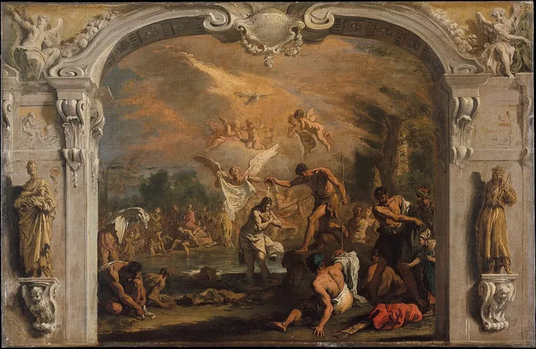

A modern popular Brazilian devotion for the struggles people actually face - illness, temptation, fear, the long fight for a family or a livelihood. It is prayed on a standard rosary, in plain Portuguese words that ask God for strength and courage, and it closes three times while striking the chest with the victory prayer quoted below.

The Terço da Batalha is prayed on an ordinary rosary - large beads, small beads, and the cross.
The Terço da Batalha is a modern popular devotion from Brazil, shared by Adrines Kölln, Católica (@adrineskolln). It is not the official Dominican Rosary, and it is not an official liturgical text of the Church. Popular devotions like this one are the people's way of praying their struggles - legitimate and loved, but they carry no promise of guaranteed results. God remains free; we remain askers.
The Portuguese text below is the source of truth for this page. Every translation is labeled as a translation, and the wording follows the version shared in the source - older variants of this devotion use different lines, and we do not mix them in.
How to Pray It
You need only an ordinary rosary and the intention you are carrying.
Hold the struggle in mind. Invite your guardian angel to pray with you.
Pray the Sign of the Cross: Pelo sinal da Santa Cruz, livrai-nos, Deus nosso Senhor, dos nossos inimigos. Em nome do Pai, do Filho e do Espírito Santo. Amém. Then pray the Creed, one Our Father, and three Hail Marys (standard texts).
On the large beads, pray: "Deus do céu, me dê forças..." (God of heaven, give me strength...)
On the small beads, pray: "Eu hei de vencer. Jesus Cristo me ama e me resgata com Seu poder!" (I shall win. Jesus Christ loves me and rescues me with His power.) on each of the ten small beads.
Repeat the large and small beads around the loop to the center medal. Close three times while striking the chest: "A vitória é nossa pelo sangue de Jesus! Amém." (Victory is ours by the blood of Jesus!)
The Prayers
The original Portuguese first, as it was shared, then a labeled translation.
On the Large Beads
Deus do céu, me dê forças. Jesus Cristo me dê coragem para essa luta eu vencer. Sem morrer, sem enlouquecer, sem muito me abater. Deus pode, Deus quer. Essa batalha eu hei de vencer.
Translation: God of heaven, give me strength. Jesus Christ, give me courage to win this fight, without dying, without going mad, without being too beaten down. God can, God wants. This battle I shall win.
On the Small Beads
Eu hei de vencer. Jesus Cristo me ama e me resgata com Seu poder!
Translation: I shall win. Jesus Christ loves me and rescues me with His power.
The Closing, Prayed Three Times
A vitória é nossa pelo sangue de Jesus! Amém.
Translation: Victory is ours by the blood of Jesus!
Where It Comes From
The Terço da Batalha was shared by Adrines Kölln, Católica (@adrineskolln) on Instagram, and we link her original rather than re-uploading it. This page identifies the shared version without claiming an established history for this particular form.
Keep Praying
A battle prayer is strongest inside the ordinary life of prayer. The Rosary is the Church's own school for it.